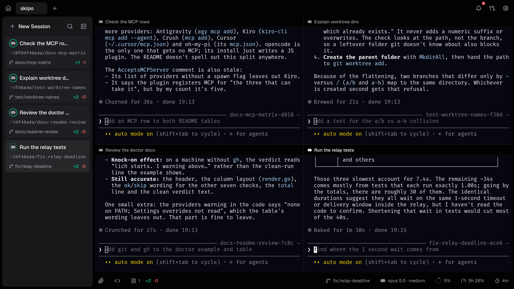
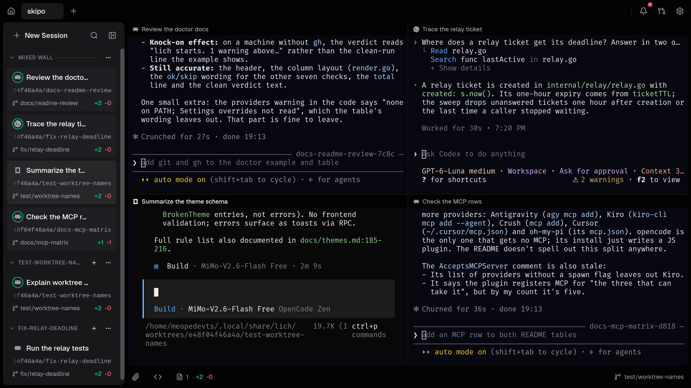
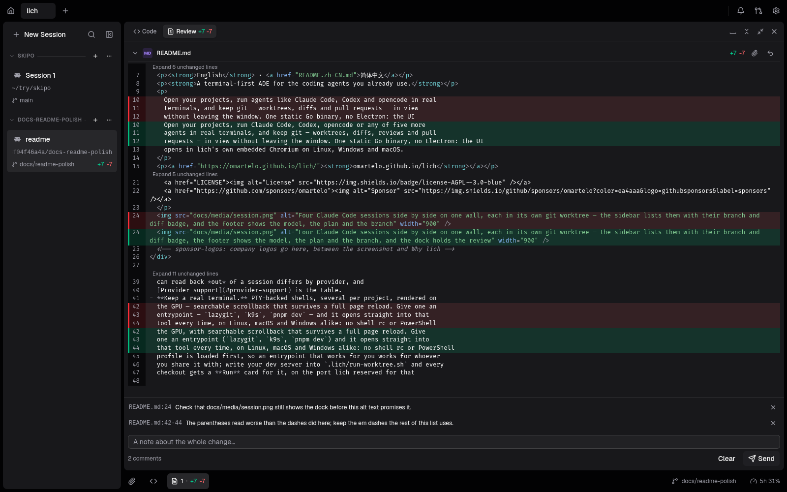
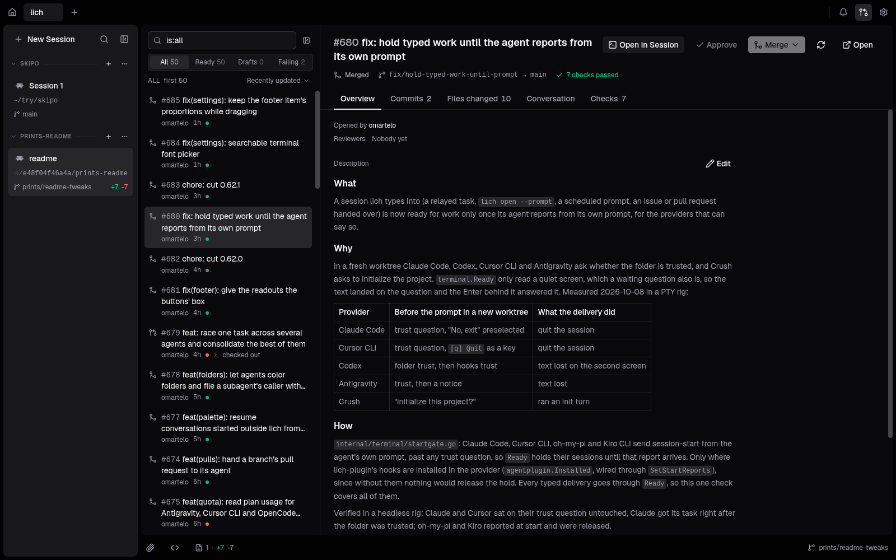
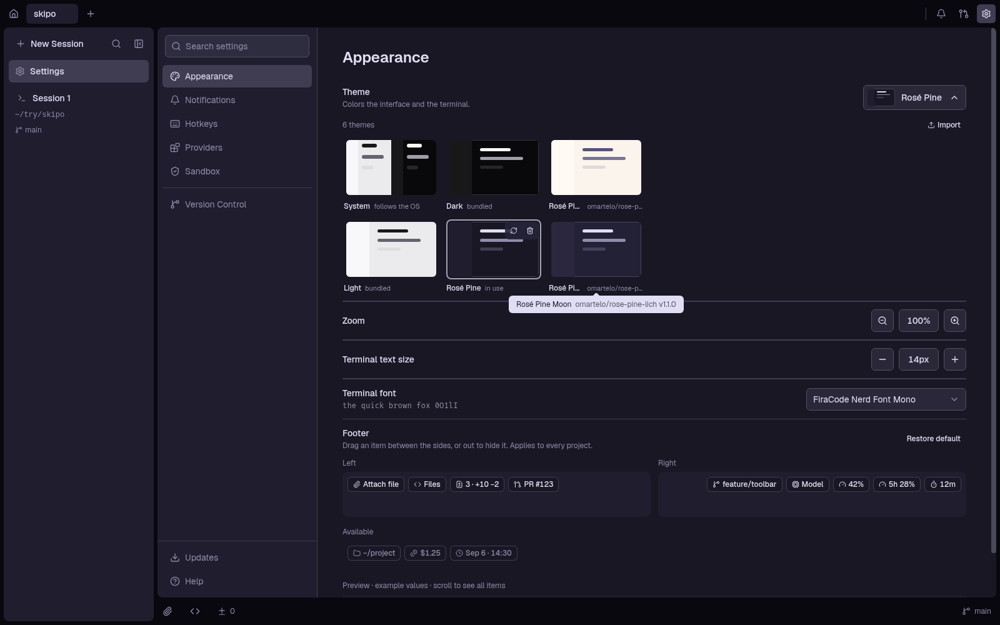
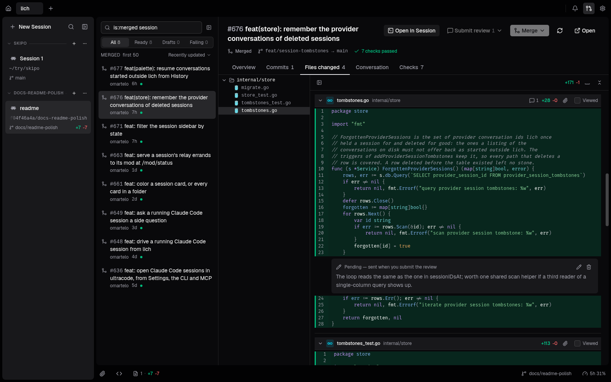

每个任务一个 worktree，在智能体启动前就已就绪
从任意基础分支创建。lich 会复制你被 gitignore 掉的 .env* 文件，预留一个开发服务器端口，并运行 .lich/setup-worktree.sh。从尚未提交的改动开始，这些改动也会一起带过去。
并排运行 Claude Code、Codex 以及另外六个智能体 CLI，每个都在自己的 git worktree 里，diff 和 Pull Request 就在同一个窗口。
Linux、Windows 和 macOS · 其他安装方式


Claude Code、Codex、opencode 并排。每个面板都是原样发布的 CLI，跑在真正的终端里；侧栏显示每个会话在做什么。

在智能体写下改动的地方读它。选中几行、写下评论，整批评论会作为一条 prompt 回到那个会话，由你自己发送。

仓库的 Pull Request，用 GitHub 自己的限定符筛选。把某个 PR 检出到 worktree，内联审查，并用基础分支允许的方式合并。

主题就是 JSON。导入一个，或者从 git 仓库安装一个主题包，仓库更新时随之更新。
lich 在你的 PATH 上找到它们，并打开它们的终端。登录、套餐和配置都还是它们自己的；lich 没有自己的账号，也没有自己的 API 密钥。
claudecodexagyopencodeompcrushcursor-agentkiro-clilich 从每个智能体读回什么（上下文、费用、套餐用量、恢复会话），见 provider 支持表。
会话开工所需的一切，以及你读懂它做了什么所需的一切。
从任意基础分支创建。lich 会复制你被 gitignore 掉的 .env* 文件，预留一个开发服务器端口，并运行 .lich/setup-worktree.sh。从尚未提交的改动开始，这些改动也会一起带过去。
在 diff 里右键选中的内容，写下哪里不对，准备好之后再把整批评论交给会话。
待提交的评论留在你的机器上，直到你提交审查，再通过 gh 发到 GitHub。

你敲的那个 lich 命令，也是一个会话给另一个会话派任务、再读回答案的方式；也可以通过 14 个 MCP 工具。
$ lich send docs "document the new --base flag" Added --base under lich open, with the rule for a branch that already exists. $ lich sessions auth-fix lich codex busy docs lich claude done
每种颜色都是一个主题 token。导入一个 JSON 文件，或者从 git 安装一个主题包。
智能体可以在操作系统沙箱里启动：一个全新的 home，机器的其余部分只读，只有它自己的检出目录可写。Linux 用 bubblewrap，macOS 用 sandbox-exec。它不是针对恶意代码的边界。
Ctrl/Cmd+K 按名称或按会话里说过的话跳到某个会话，还能恢复你在 lich 之外开始的对话。有会话在等你时，桌面通知会告诉你。
然后打开一个项目，选一个智能体。需要 PATH 上有 git；只有 Pull Request 需要 gh。
curl -fsSL https://raw.githubusercontent.com/omartelo/lich/main/install.sh | sh
按你的发行版选择 .deb、.rpm 或 .pkg.tar.zst，并用 checksums.txt 校验。Arch 上：yay -S lich-bin。需要 glibc 2.34+ 和 zenity。
brew install --cask lichdotdev/tap/lich
通过 Homebrew；brew upgrade 会装上下一个版本。
scoop install https://github.com/omartelo/lich/releases/latest/download/lich.json
或者用 Releases 里的安装程序，它会原地自我更新。
tarball、便携 zip 和校验步骤见 INSTALL.md。